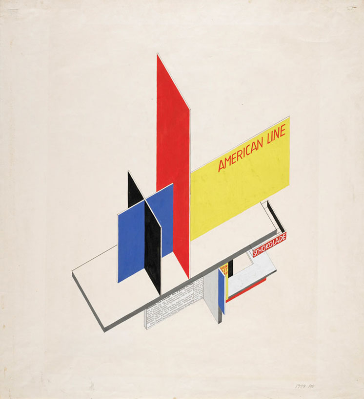

Siguiente Galeria- "Surrealismo"
Penn. Station, Madison Square Garden and Empire State Building
New York City, 2009, by Thomas Claveirole
American Museum of Natural History #1
New York City, 2009, by Thomas Claveirole
NYC Marathon in Harlem #4
New York City, 2009, by Thomas Claveirole

Cathedral Church of Saint John the Divine #3
New York City, 2009, by Thomas Claveirole
SoHo
New York City, 2009, by Thomas Claveirole

Manhattan Downtown/Wall St. Heliport
New York City, 2009, by Thomas Claveirole
Musée National du Moyen Âge
Paris, 2009, by Thomas Claveirole
Métro Jussieu
Paris, 2009, by Thomas Claveirole